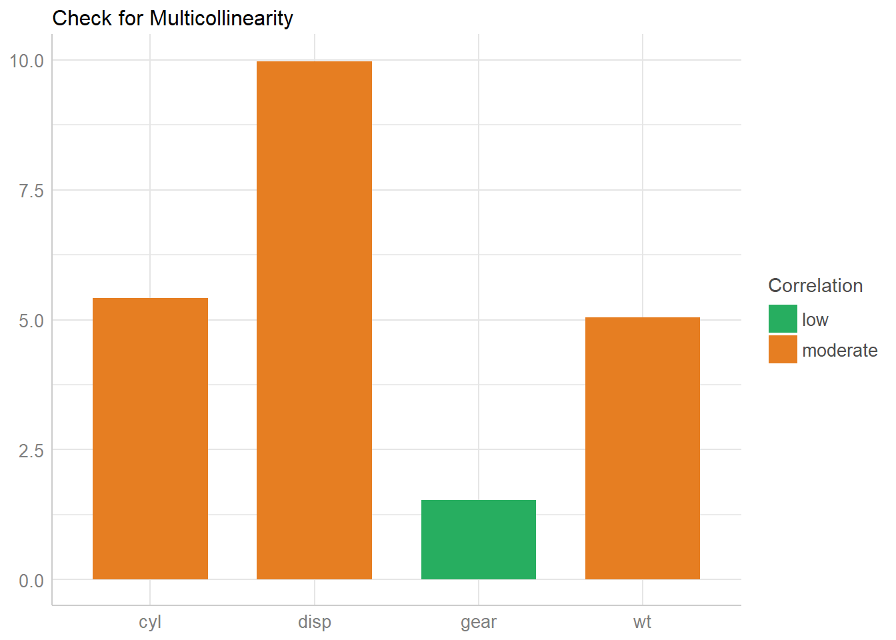
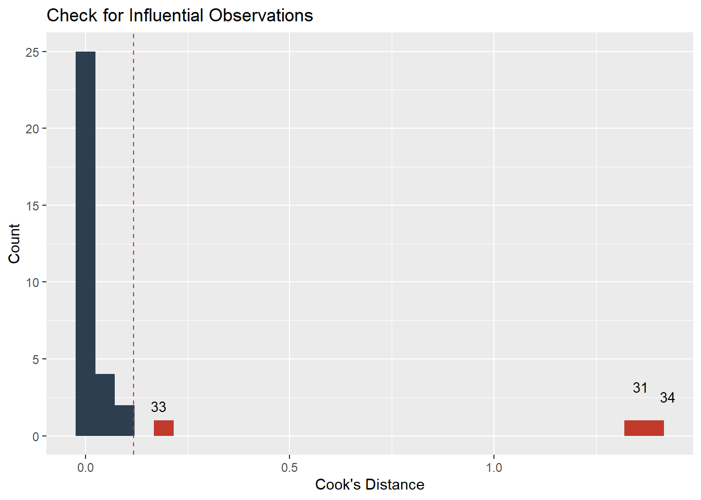
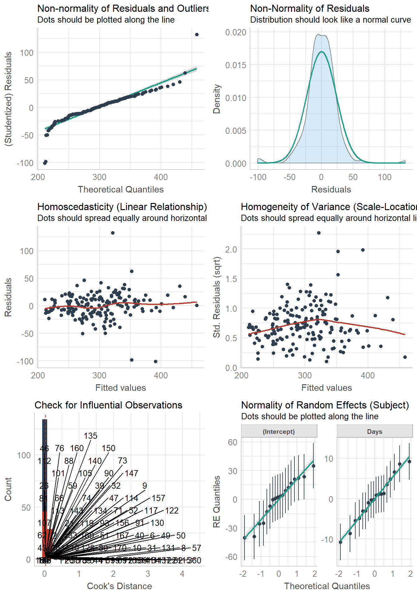
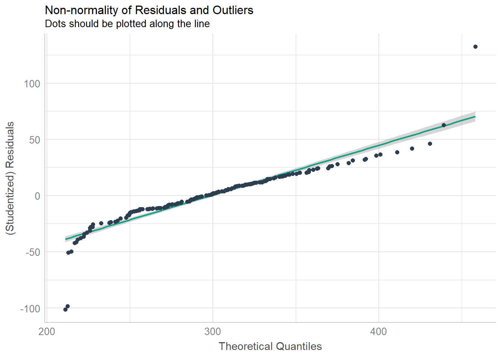
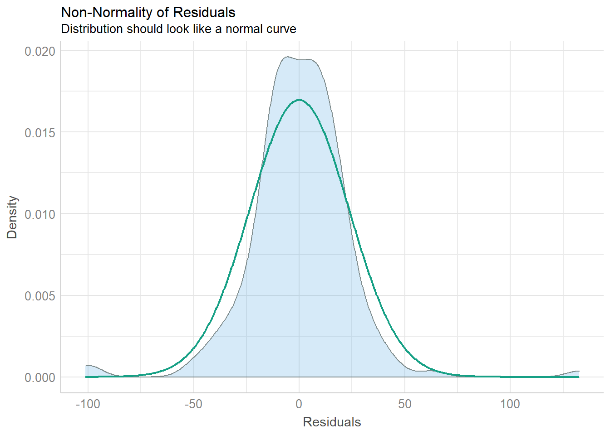
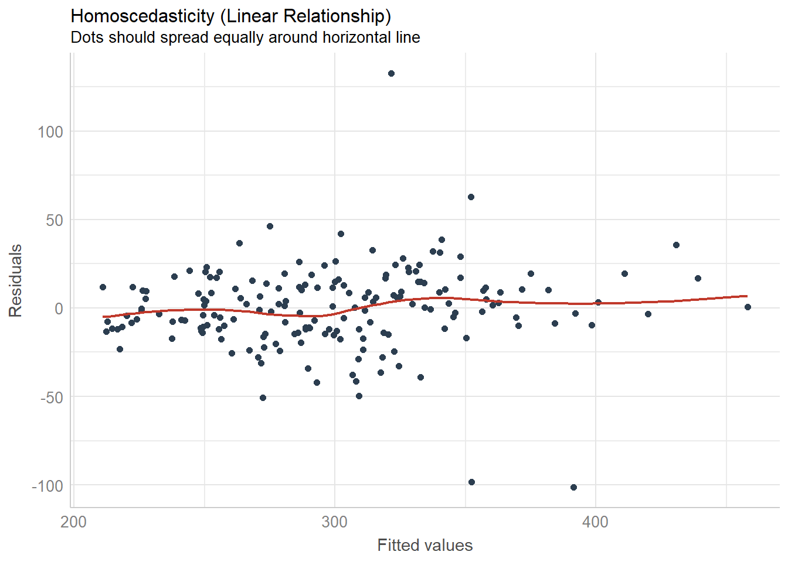
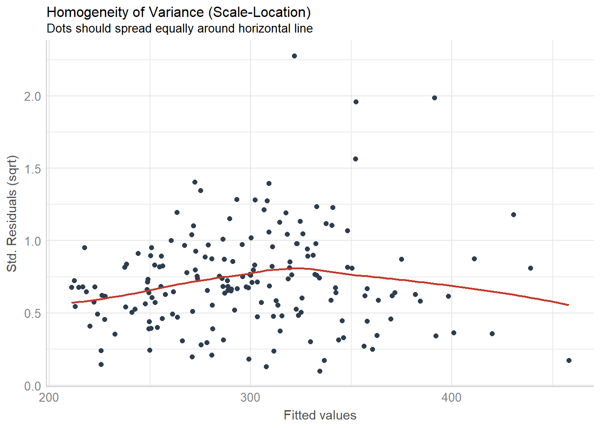
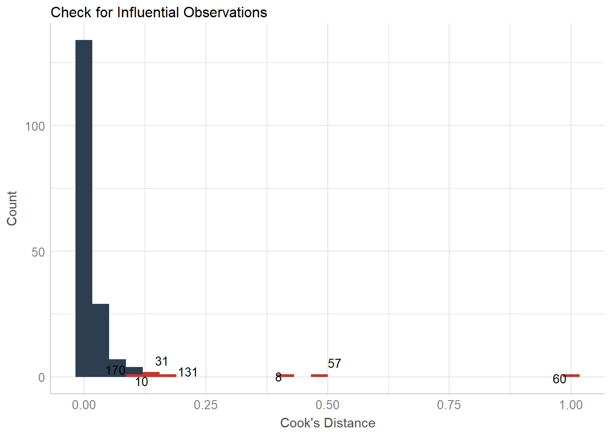
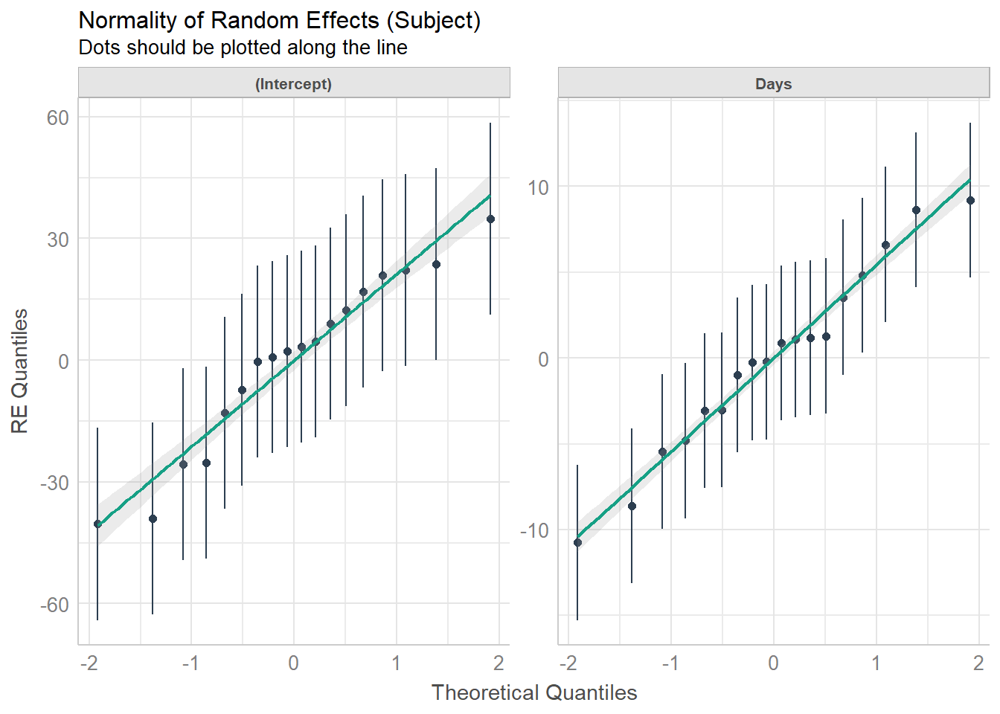
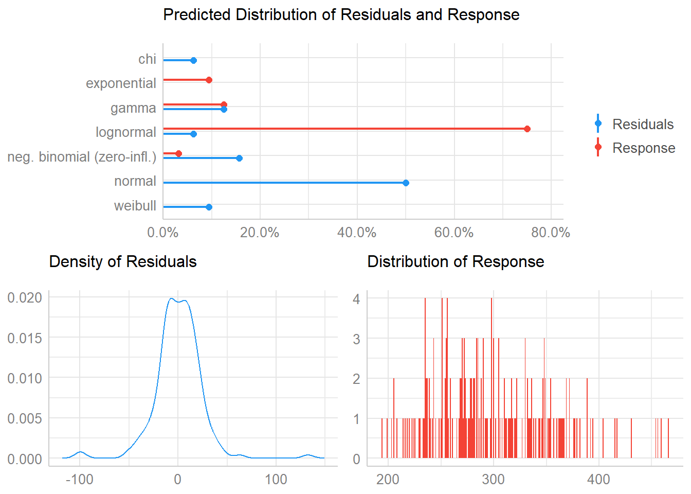

Plotting Functions for the performance Package
performance.RmdChecking Model Assumptions
Binned Residuals
model <- glm(vs ~ wt + mpg, data = mtcars, family = "binomial")
binned_residuals(model)
#> Warning: Probably bad model fit. Only about 50% of the residuals are inside the error bounds.
Check for Multicollinearity - Variance Inflation Factor
m <- lm(mpg ~ wt + cyl + gear + disp, data = mtcars)
result <- check_collinearity(m)
result
#> # Check for Multicollinearity
#>
#> Low Correlation
#>
#> Parameter VIF Increased SE
#> gear 1.53 1.24
#>
#> Moderate Correlation
#>
#> Parameter VIF Increased SE
#> wt 5.05 2.25
#> cyl 5.41 2.33
#> disp 9.97 3.16
plot(result)
library(glmmTMB)
data(Salamanders)
# create highly correlated pseudo-variable
set.seed(1)
Salamanders$cover2 <-
Salamanders$cover * runif(n = nrow(Salamanders), min = .7, max = 1.5)
# fit mixed model with zero-inflation
model <- glmmTMB(
count ~ spp + mined + cover + cover2 + (1 | site),
ziformula = ~ spp + mined,
family = truncated_poisson,
data = Salamanders
)
result <- check_collinearity(model)
result
#> # Check for Multicollinearity
#>
#> * conditional component:
#>
#> Low Correlation
#>
#> Parameter VIF Increased SE
#> spp 1.07 1.04
#> mined 1.17 1.08
#>
#> High Correlation
#>
#> Parameter VIF Increased SE
#> cover 13.45 3.67
#> cover2 13.28 3.64
#>
#> * zero inflated component:
#>
#> Low Correlation
#>
#> Parameter VIF Increased SE
#> spp 1.08 1.04
#> mined 1.08 1.04
plot(result)
Check for Outliers
# select only mpg and disp (continuous)
mt1 <- mtcars[, c(1, 3, 4)]
# create some fake outliers and attach outliers to main df
mt2 <- rbind(mt1, data.frame(mpg = c(37, 40), disp = c(300, 400), hp = c(110, 120)))
# fit model with outliers
model <- lm(disp ~ mpg + hp, data = mt2)
result <- check_outliers(model)
result
#> Warning: 2 outliers detected (cases 31, 34).
plot(result)
Check for Normal Distributed Residuals
Overall Model Check
model <- lmer(Reaction ~ Days + (Days | Subject), sleepstudy)
check_model(model)
#> Not enough model terms in the conditional part of the model to check for multicollinearity.
check_model(model, panel = FALSE)
#> Not enough model terms in the conditional part of the model to check for multicollinearity.
Model and Vector Properties
model <- lmer(Reaction ~ Days + (Days | Subject), sleepstudy)
result <- check_distribution(model)
result
#> # Distribution of Model Family
#>
#> Predicted Distribution of Residuals
#>
#> Distribution Probability
#> normal 50%
#> neg. binomial (zero-infl.) 16%
#> gamma 12%
#>
#> Predicted Distribution of Response
#>
#> Distribution Probability
#> lognormal 75%
#> gamma 12%
#> exponential 9%
plot(result)
vec <- bayestestR::distribution_poisson(n = 500, lambda = 2.5)
result <- check_distribution(vec)
result
#> # Predicted Distribution of Vector
#>
#> Distribution Probability
#> poisson 56%
#> negative binomial 38%
#> poisson (zero-infl.) 6%
plot(result)